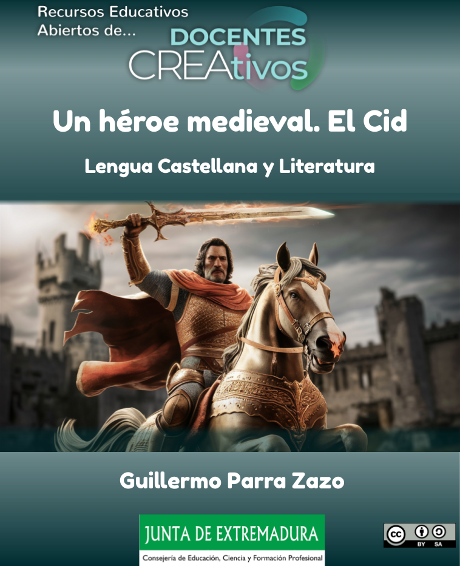
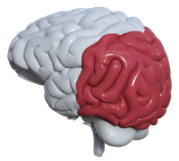

Título: REA "Un héroe medieval. El Cid".
Temática: El Poema de mío Cid. Textos descriptivos.
Autoría: Guillermo Parra Zazo, para programa CREA.
Materia: Lengua castellana y Literatura.
Metodología: aprendizaje basado en proyectos (ABP).
Curso: 3º ESO.
Sesiones: 4/5 sesiones.
Producto final: El alumno realizará un texto descriptivo en el que recoja lo aprendido sobre la época, la literatura medieval, el mester de juglaría y el Poema de mío Cid. El tiempo estimado para su realización será de una hora, siempre y cuando los alumnos lleven comprendidos y asimilados los contenidos del REA a dicha sesión. Se incluye una rúbrica de evaluación del texto descriptivo final.
Descripción: El REA consta de tres apartados en los que el alumno conocerá los rasgos generales de la Edad Media, El Poema de mío Cid y El texto descriptivo. Una vez asimilados estos contenidos deberá realizar un texto descriptivo.
Objetivos didácticos
-Producir textos escritos y multimodales coherentes, cohesionados, adecuados y correctos atendiendo a las convenciones propias del género discursivo elegido, construyendo conocimiento y dando respuesta de manera informada, eficaz y creativa a demandas comunicativas concretas.
-Conocer y valorar obras o fragmentos literarios del patrimonio nacional y universal.
Contenidos del recurso
El recurso está dividido en los siguientes apartados:
- Una introducción en la que veremos un vídeo que nos servirá para introducir la época medieval y recordar nuestros conocimientos previos.
- Una explicación general de la Edad Media con ejercicios de respuesta múltiple para asentar lo aprendido. También se incluye un vídeo para profundizar en la época.
- Un estudio sobre el Poema de mío Cid con un divertido juego para poner a prueba nuestros conocimientos.
- Una introducción a los textos descriptivos con ejercicios de respuesta múltiple sobre dos textos de este tipo.
- Un trabajo final consistente en la elaboración de un texto descriptivo sobre el Cid.
Evaluación y calificación
A la hora de evaluar el recurso se seguirán los siguientes criterios:
- La lectura atenta de los apartados y la realización de los ejercicios.
- La participación activa en las explicaciones.
- La colaboración entre los miembros de los grupos de trabajo y el reparto equitativo de responsabilidades.
- La calificación del trabajo final de acuerdo con la rúbrica de evaluación aportada.
DUA
Este REA se ha diseñado procurando que sea lo más accesible posible, y cumplir con los principios y pautas del Diseño Universal para el Aprendizaje.
Incluimos a continuación los principales indicadores del DUA que hemos aplicado. Pulsar en ellos para desplegar.
 Redes afectivas. Implicamos al alumnado en el aprendizaje.
Redes afectivas. Implicamos al alumnado en el aprendizaje.
- Hay diferentes opciones para elegir recursos, actividades, agrupamientos...
- Hay actividades con retroalimentación sobre aciertos y errores, así como sugerencias de mejora...
- Propiciamos un clima favorable en clase fomentando la cohesión del grupo a través del trabajo en equipo.

Redes de conocimiento. Presentamos la información en varios formatos.
- Se han previsto diferentes formas para mostrar la información al alumnado, como texto y vídeo.
- La información está organizada, dejando claras las partes más importantes.
- Las actividades están secuenciadas en orden de dificultad creciente, y están pensadas para facilitar la comprensión de los puntos teóricos y la realización de las tareas finales.
 Redes estratégicas. Se proporcionan formas diferentes para aprender y expresar lo aprendido.
Redes estratégicas. Se proporcionan formas diferentes para aprender y expresar lo aprendido.
- Damos estrategias para que el alumnado autorregule su aprendizaje. Por ejemplo, en la sección "Nos organizamos" ofrecemos una lista de cotejo con las actividades del REA.
- Combinamos actividades individuales con agrupadas que favorezcan el aprendizaje entre iguales.
- Indicamos los tiempos aproximados de ejecución de las tareas y del REA, que pueden flexibilizarse.
Implica desarrollar el pensamiento crítico, la curiosidad, la creatividad y la capacidad de aprender a lo largo de la vida.
Implica desarrollar habilidades prácticas, técnicas y profesionales que permitan actuar en diferentes contextos y situaciones.
Implica desarrollar la identidad personal, los valores, la autoestima, la autonomía y la responsabilidad.
Implica desarrollar la convivencia, el respeto, la tolerancia, la solidaridad y la cooperación
- Recursos y/o conocimientos previos necesarios
-
- No es necesario tener conocimientos previos.